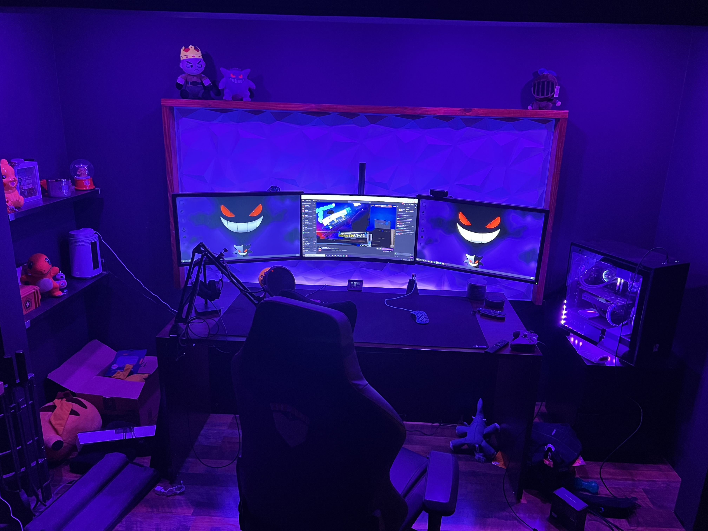
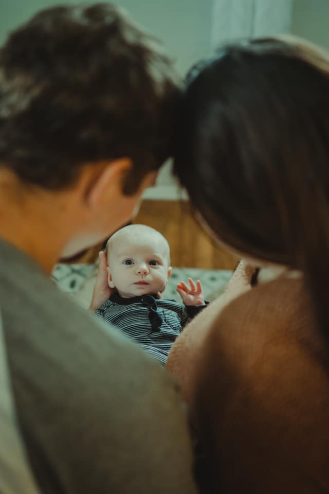
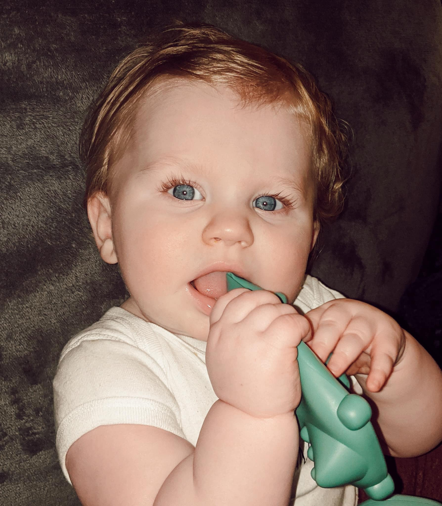

My name is Tyler, and welcome to my personal website! Here, we are going to get more familiar with my personal and professional background! I will break it down into various categories.
As I said earlier, my name is Tyler! I am beginning my classes at Flatiron School on April 25th 2022. I am joining the FLEX program because I currently have a full-time job! The FLEX program suits me the best since I am limited to the times I can attend classes. I am looking forward to learning this new skill and doing the very best i can! (if you hover over an image it will tell you if there is audio!)
I have worked in a few fast food restauarants. My first job was at Eat'n Park. There i was a busboy/dishwasher. As a first job it was much more hectic and busy than i thought. I learned alot through my experiences here.
Then I worked at Subway for awhile. There I learned that I actually like country music and has become one of my favorite genres of music.
I began to become more of a professional while working for Burger King. I started as a cashier. Then a mere 6 months later i became a manager, and from there I became the Assistant General Manager. I learned important skills like time management, delogation, inventory, and cash management.
As for my current occupation, I am a member of The Ironworker's Union. The Ironworker's scope of work includes erecting structural steel, welding, tying rebar, and much more. Although my apprenticeship is almost over I have already become a foreman for the company I work for! We tie rebar. Rebar is rods of metal used to reinforce concrete. I have worked on some cool projects! From hospitals, highschools, colleges, airports, to water treatment facilities. It is tough physical labor. Even though it is a lot of hardwork most people don't notice it because it is always covered by concrete. The second photo is from one of my jobsites!
In my spare time I like to play videogames, do home improvement projects, and hangout with my family. I mostly play first person shooter games. Escape From Tarkov has consumed most of my free time but I still play other games. Rocket League has become a favorite because it is so fun and I can play a few rounds in a short period of time. Also I've picked up a classic MMORPG known as Old School RuneScape. Even though this game has been out for a very long time it always drags me back in after not playing for awhile.

I used to stream alot! I LOVED to stream and interact with random people. I haven't been able to lately since my computer is starting to become outdated. One day when i have more time and a better computer i will stream again. In the meantime I continue to upgrade and make my set-up look and function better!
We bought our house last year and the projects just keep coming. first off, I built a fence in the front yard for our dogs and child to play in. Then our basement flooded, so I had to redo the entire finished portion. That included laying down new flooring, drywalling the entire room, and painting. Now since summer is right around the corner it is time to start the outdoor projects. Fixing the paver sidewalk, fixing the steps, tearing out an old planter, and setting up the furniture on the deck. As far as future projects go, I would like to finish the laundry room and put in flooring, walls, new lights, and redo the plumbing. Who knows what's after that.
I also enjoy watching anime! Some of my favorites are Jujutsu Kaisen, My Hero Academia, and Demon slayer. My Favorite of all time is One Piece, there is over 100 episodes and ive watched it over and over.
I met my beautiful wife, Summer, over 7 years ago! Her name is Summer and she truly is the glue that keeps this family together! We got married 10/24/2020. Yes that means we had a COVID wedding. Even with all the restrictions it was one of the best days of my life! She works from home now so she gets to spend ALOT of time with our little one, Luca. Luca will be 1 year old the day I start class at Flatiron(4/25/22). Having a child changes EVERYTHING, but it is the best thing that has happened to us. No matter how bad of a day you're having when you see him smiling and giggling it makes it all better!
 Last but not least are our two pups. We have two Shiba Inus. The oldest's name is Smoky and he is your typical tempormental and independant Shiba. The younger one is Ginger. She isn't typical, she will cuddle any and everyone, but she still has that Shiba attitude.
I hope youve enjoyed a deeper look into my life! Ths conclude's my personal website!